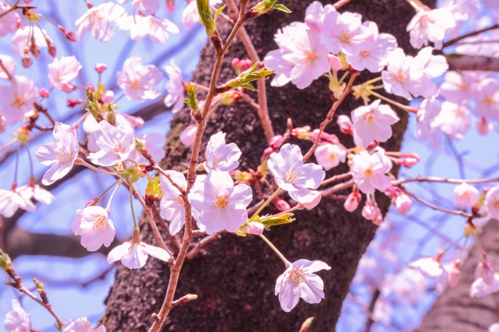
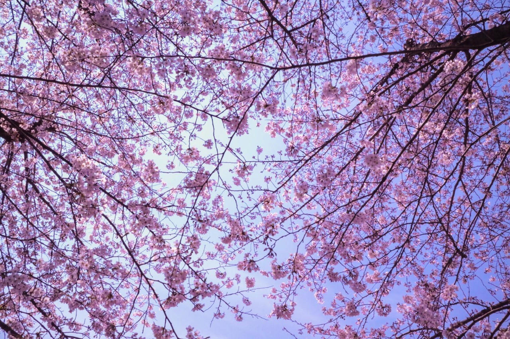
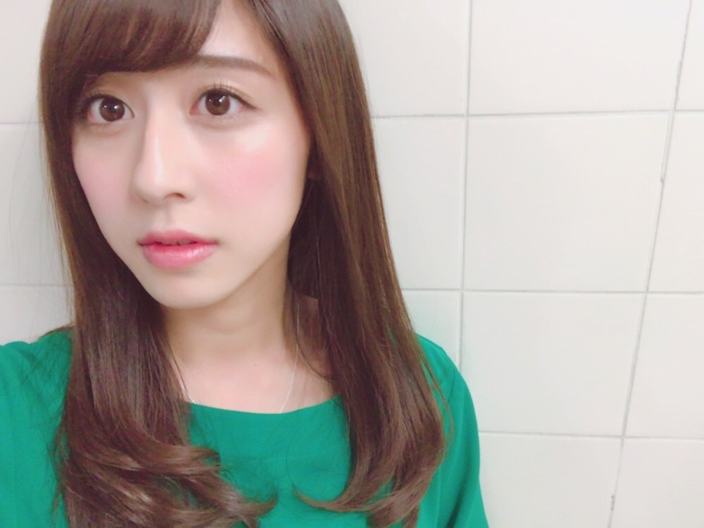

| 2017/04 05 Wed | 斎藤ちはる 桜が好き |
ちはるーむへようこそ
今日のちはるーむではカップケーキを食べました。
今日はヘアカットの日。
明治5年に、女性の断髪禁止令が出された日らしいです。
女性の力がまだまだ弱い時代は髪の毛を切ることさえ許されなかったんですね...
みんなどうしていたんだろう？
想像が膨らみます。
桜が至る所で咲いていて
歩く度に嬉しくなります。
目の保養だよ〜嬉しいよ〜
桜のお花が一番好き！
お花の中で！
だから今とても私にとって幸せの時期です。
今年の成人式の振袖にも偶然、
桜の模様が描かれていました！！
私の大好きな桜を
身に纏うことができて
嬉しかったよ〜
#chihashot

出会いと別れの春に
ぴったりの儚いお花。
桜ってなんでこんなに可愛いんだろう
素敵なんだろう
日本人が大好きなのもわかる気がする。うむうむ
#chihashot

二つの桜の木が
ほんの少しだけ重なっている。
その隙間から見える空が
私はとても好きです
ピンクと水色のコンビって
本当可愛いよね☺︎
大好きな色の組み合わせっ
写真で撮ったものを加工して
色合いや光の具合を調節しています↑
色合いを変えるだけで
だいぶ雰囲気が変わるので、
私は同じ写真を何回も加工して
別の雰囲気の写真にしたりしているよ〜
その作業も楽しいんだ〜
------------------------------------------------♡
♬ ChihaMusic
「SAKURA」いきものがかりさん
切ないながらも
背中を押してくれる、
この時期にぴったりな曲。
この曲を聞くと満開な桜ではなくて
散っている桜吹雪を思い出す。
散り際まで美しいのは桜だけな気がする。
歌詞だけじゃなくて曲調からも。
"君と春に誓いし この夢を
強く胸に抱いて さくら舞い散る"
例え離れてしまっても
近くにいることがなくなってしまっても
この夢は忘れずに叶えるから。
っていう約束が素敵。
昨日寝落ちしそうになりながらも
お風呂に入っていたんだけど、
起きて気付いたら3時間経っていたの...
一歩間違えていたら本当危なかった(> <)
前にもこういう事あったから
気を付けなきゃいけないなぁ
生活リズム見直さなきゃいけないっ

おやすみ
斎藤ちはる